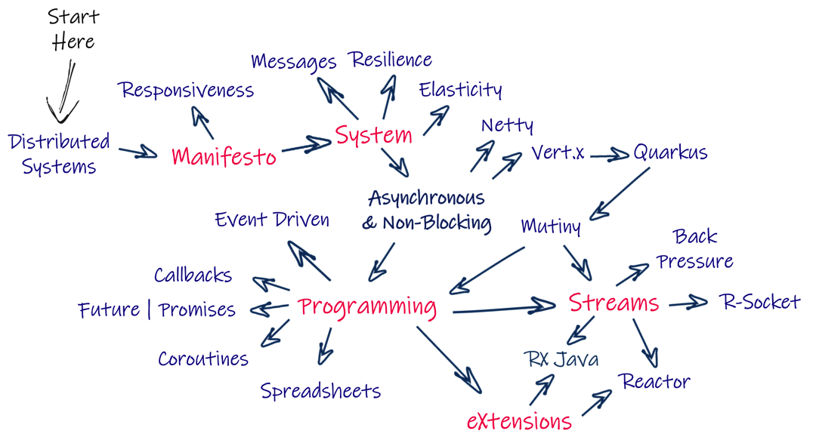
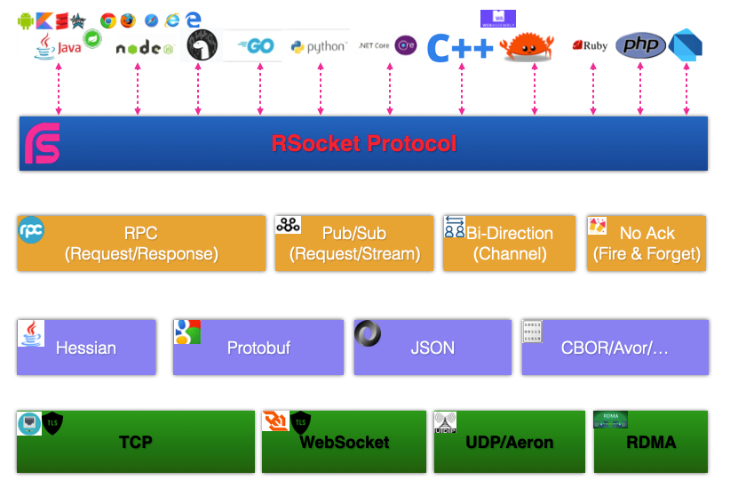
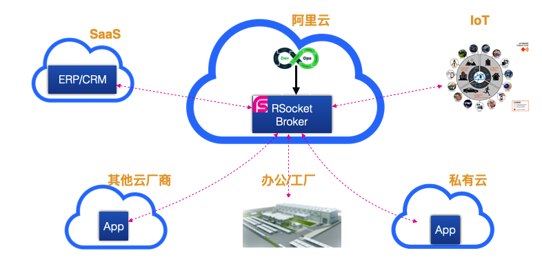

Alibaba RSocket Broker
快速构建即时响应(Responsive)、自恢复(Resilient)、弹性(Elastic)、消息驱动(Message Driven)的分布式通讯系统

开发简易
通讯接口基于Reactive(Mono或者Flux)语义，服务实现自动完成Broker注册，服务调用方不用担心负载均衡、错误重试、限流等问题。

极致性能
Alibaba RSocket Broker基于全异步化架构设计，通讯过程中内存操作完全是零拷贝(Zero Copy)，二进制路由解析，支持io_uring。

多语言支持
RSocket包含对多种主流开发语言的支持，如Java/Kotlin, JavaScript/Node.js/Deno, Python, Golang, Rust等，总计10种以上开发语言。

多环境部署支持
独立可执行Fat jar， Docker Compose快速启动，针对Kubernetes，提供完备的Helm部署支持，支持开发环境、测试环境和产品环境快速部署支持。

Spring Boot友好
针对Java开发者，提供了完备的Spring Boot支持(Actuator、Metrics等)，兼容Spring RSocket和Spring Cloud RSocket，rsc命令行测试等。

开放源码
不只是Alibaba RSocket Broker是开源的，RSocket的通讯协议、各个语言的SDK等，这些都是开源的， 你可以参与或者定制内部版本的RSocket Broker。
Reactive生态/全异步化架构
RSocket是基于Reactive语义的全异步、二进制、消息驱动通讯协议，是Reactive生态的通讯核心。
异步化的架构可以消除I/O阻塞(None Blocking)，让应用的处理能力更高，你需要的支付成本更低。
此外Reactive的概念和异步化(async/await)、Event Loop、协程(Coroutines)、Actor等模型相通，
而且这些框架之间也都能相互兼容，如Reactive框架和Akka就完全互通的，非常便于你采用不同的技术栈和开发语言构建高性能的分布式应用。
适用场景： 基于事件驱动的架构设计、是云原生和Serverless架构的首选。 对异步化生态支持友好，如Node.js和Deno等。 Reactor、RSocket和R2DBC是Spring Reactive生态核心， 也是Spring Reactive技术栈的技术首选。
适用场景： 基于事件驱动的架构设计、是云原生和Serverless架构的首选。 对异步化生态支持友好，如Node.js和Deno等。 Reactor、RSocket和R2DBC是Spring Reactive生态核心， 也是Spring Reactive技术栈的技术首选。

多语言场景
RSocket是标准的通讯协议，包括各个主流语言的SDK支持，如Java/Kotlin，Node.js, Python, .Net, Golang, C++等，
也包括对新兴语言的支持，如Rust，Deno，Swift等，确保各种开发语言都可以无缝和RSocket对接。
RSocket采用统一的Reactive编程模型，学习成本非常低，各种语言的Reactive差别也比较小，非常适合全栈(FullStack)工程师。
此外根据不同语言的特性，RSocket SDK有对应的语言特性调整，如JavaScript/TypeScript/Dart等语言的await/async Promise支持，
Python的AsyncIO整合，Kotlin Coroutines和Flow整合等，确保RSocket SDK也是Language Native的，没有任何违和感，减小语言接入成本。
支持的平台： Spring Platform，包括Spring Boot, Spring Cloud等。 Kotlin Platform，包括Kotlin/Java, Kotlin/JS和Kotlin Native等支持。 JavaScript生态：支持浏览器支持、Node.js和Deno，RxJS和Svelte无缝对接。
支持的平台： Spring Platform，包括Spring Boot, Spring Cloud等。 Kotlin Platform，包括Kotlin/Java, Kotlin/JS和Kotlin Native等支持。 JavaScript生态：支持浏览器支持、Node.js和Deno，RxJS和Svelte无缝对接。

混合云
RSocket支持多种通讯模型，完全可以满足多种通讯场景的需求，如远程调用(RPC)、消息订阅(Pub/Sub), 双向发送(Channel)，和元信息推送(Metadata Push)等。
此外在RSocket还可以通过Adapter/Gateway方式和其他协议之间相互通讯，如HTTP REST, gRPC, MQTT等，简化各种应用/设备之间的对接成本。
RSocket还支持对等(Peer 2 Peer)，也就是通讯双方互为Client/Server，通过RSocket Broker的接入，兼容各种网络结构，无需网络改造就可以支持各种混合云/基础设施之间的通讯。
适用场景： 混合云之间通讯，无需Gateway等基础设施。SaaS和合作伙伴对接，多种通讯模型，满足复杂的企业架构需求。 IoT和云间的通讯，完善的异步化支持、流式推送、断点续传(Resume)支持，非常适合小型设备接入。
适用场景： 混合云之间通讯，无需Gateway等基础设施。SaaS和合作伙伴对接，多种通讯模型，满足复杂的企业架构需求。 IoT和云间的通讯，完善的异步化支持、流式推送、断点续传(Resume)支持，非常适合小型设备接入。
